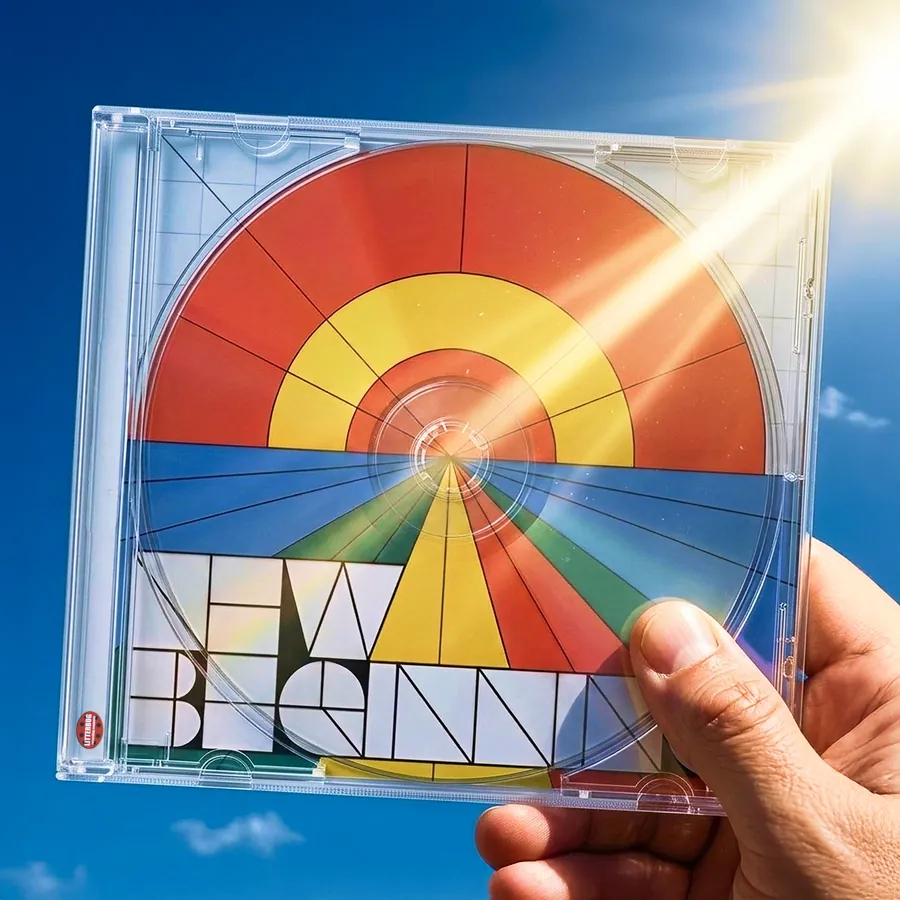
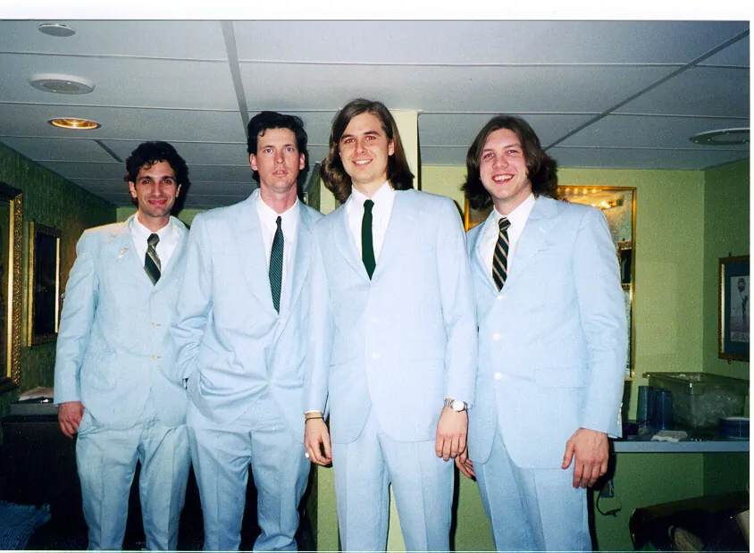
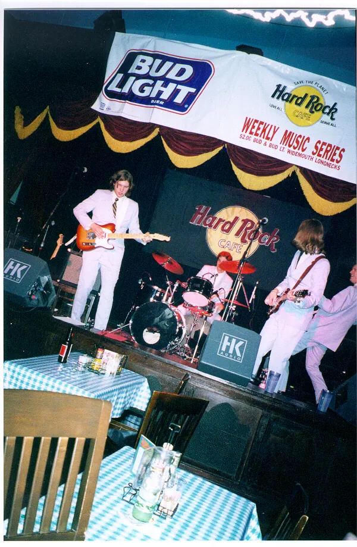
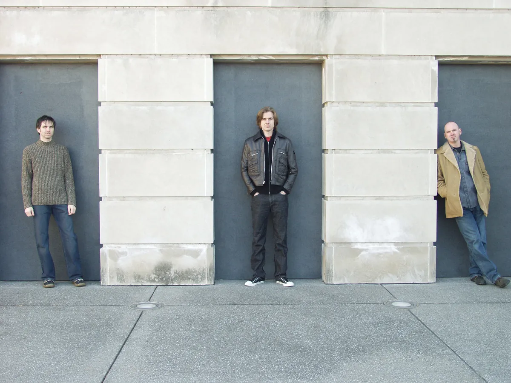
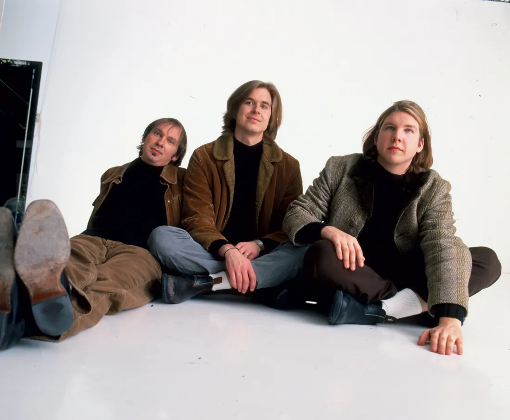

New Beginning
Single · April 17, 2026 · Litterbug Records
Two tracks, “New Beginning” and “Great Day”.
Cover art: David Dewese
The Luxury Liners are a power-pop band co-founded in 1997 by David Dewese and Chad Edgington, who took it to Nashville together. The name comes from the Gram Parsons song 'Luxury Liner'.
Founded in 1997. Two new singles in 2026. The band never broke up.
Latest release: New Beginning, April 2026


Two singles in 2026, both written by Chad and David and played by all four forever members.
Single · April 17, 2026 · Litterbug Records
Two tracks, “New Beginning” and “Great Day”.
Cover art: David Dewese
Single · February 13, 2026 · Litterbug Records
The first of the two.
Cover art: David Dewese
Play “Great Day” (loads YouTube)
Pale-blue suits in 1998, the white-studio sessions around 2000, and the trio in 2003.





Chad left Nashville in March 2001, a year before this photo. All four play on the 2026 singles.
Co-founder. Guitar, bass, lead vocals; writes songs.
1997–
Co-founded the band with Chad in 1997 and carried it on as a trio from 2001.
Co-founder. Guitar, bass, vocals; writes songs.
1997–2001; on the 2026 singles
Co-founded the band with David in 1997. He left Nashville in March 2001, and he plays on “Great Day” and “New Beginning”, which he wrote with David.
Drums, percussion, vocals.
1998–
Joined on drums in August 1998 and painted the pictures on the cover of Nonetheless.
Bass, keyboards, vocals.
2000–
Joined on bass in December 2000. The band already had a David, so he became Larry.
Not to be confused with Emmylou Harris’s album Luxury Liner; Luxury Liners, the recording name of singer-songwriter Carter Tanton (They’re Flowers, 2013); the Finnish band Luxury Liner; or the bands Luxury (Georgia, 1990s) and Luxury (Iowa, 1977–82).